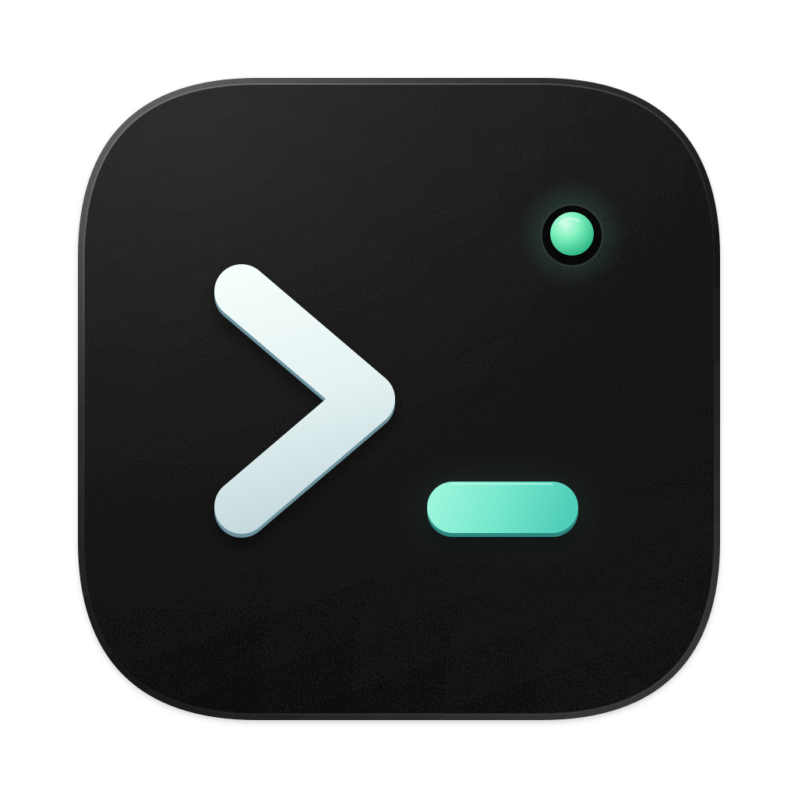

Runode
The native macOS terminal
built for
AI coding agents
给 AI 编程 agent 准备的 macOS 原生终端
Agent status & alerts
Scriptable CLI
iOS remote
Rust · Ghostty · GPUI
github.com/runode-dev/runode
Claude Code
~/runode · host
Waiting for you
Codex
~/runode · cli
Working
Gemini CLI
~/site · docs
Done
❯
runode send right 'cargo test' --wait
❯